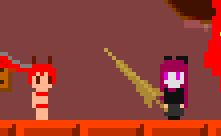
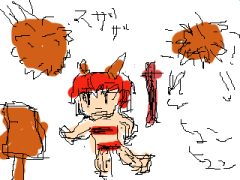

「とても怖いところ」をup。同梱のOP（html）更新。
ネットへの書き込みを（ゲーム本体（紹介含む）とメール以外では）ゲームをアップしたときに400文字まで、という自分ルールを作りました。範囲はまだ厳密ではないですが、掲示板含めて「発言」は全くしません。（もちろん掲示板へのコピペもしません）
言いたい事を文字数内で
次にここ書くのは半年後かもっと先かも。
http://www.pixiv.net/member_illust.php?mode=medium&illust_id=27932728
ここで作っていたゲームの絵をフリー素材としてアップロードした。ごじゆうにおわそびくださいただしカマデナイヨウニ危いさんりおたこぶえ×○ディライン観客動員150人突破！
だいぶ前の話だけど「ここで作っていた」のだからここにも書かないと。
http://portal.nagisoft.jp/detail.php?id=79
週刊少年チャンピオンに連載されている『さくらDISCORD』という漫画の二次創作（？）を四月馬鹿付近の時期にやっていました。あれ？ 二ヶ月過ぎてる？
今現在は島が好きです。退場したけど。
芽吹のあの身体能力が何なのか未だ残る謎にも惹かれます。
モンハンをいまだにやっている。
すごいゲームではあるけど、人にすすめる前に時間を無駄にする覚悟があるかどうかをどのように確認すればいいのかわからない。
やめといたほうがいいかもしれない、とは言えない。プレイする人が増えたほうが当然うれしいし。
3DSでプレイ開始してみたという人の中には、奥深さやすごさは認めながらも、モンスターが本当に怖くてなどの理由で、起動するのが面倒になり停滞する人も少なからずいる。

http://hp.vector.co.jp/authors/VA018250/gagasu/
せーの、ガガスバンダス。
http://www.vector.co.jp/soft/winnt/game/se495266.html
まろんがり更新(up3)。
FPS安定化以外には基本何も変わっていない。新ステージなどはなし。
それでもふと気になって、謎解き要素のメッセージが多少ユーザーフレンドリーに。あの8面の解法はヒントメッセージがわかりやすくなったはず。
マニュアルの「ストーリー」も気になったので改竄。
次回作については考えるフリをしています。
「まろんがり」に今までつけていなかったFPS表示機能を付け、ついでに描画のウェイトをDXLIB公式のサンプルコードと同じにしたら、速くなった。きちんと50fpsで動くとかなり速く感じた。新コードの上で40fpsくらいにすると古いコードのときの自分の環境と同じくらいになる。50fpsだと無理ゲー。
速いマシン環境で50fpsでやって無理ゲーだと判断した方も多かったんでは……。無理ゲーでした、ごめんなさい。

このゲームについてはそのうち40fpsに安定するバージョンを出します。
ちなみに他のものでは、fps表示があってその数値が大丈夫なら大丈夫だと思う。
ファンアートってやつがきたー。右の人の足もとがどうなっているのかの正式な設定は今のところどこにも存在しない。ブーツなのか否か？ 最初はハガー市長の靴をイメージしていたかもしれない。
せっかくなのでこのページのゲーム（多分一番下にスクショがあるもの）のやられアニメ。「ハイドラ」をプレイしている最中ごろに描いた。
このページのゲーム（多分一番下にスクショがあるもの）は、やはり無理があったので休止する。気付くのが遅すぎた……。
このページは残しておいて続くけど（多分）。
別のゲームを作ることにする。
少しだけいうと、一番下のスクショのはモンハンのせいで作ろうとしてしまったものだ。しかしだったらモンハンやってたほうがいいよとなってしまう。そういうことになってしまった。
「Windows Games G」の「G」ってどういう意味なんですか？
とたずねると、きかれた人が足早に部屋から出て行き廊下で電話とかしてる音が聞こえた後に戻ってきて、「総称です（「ガッツ石松」や「ガチャピンのスキー」などの）」と言う。
もうウディタでいいや状態。
三行で言うと
もう
ウディタで
いいや状態。
念のため普通に説明する。例えばRPGのマップを作ってマスや移動オブジェクトにさわったときのイベントを作って……というのをC++言語などでゼロから作ろうとすると、そのエンジンを作りながらスクリプトの機能を作りながらマップエディタを作りながら本編を作りまた作り直しといったことが必要になる。けれど作らなくても既にエンジンとマップ／イベントのエディタはある。既にある。ウディタ(WOLF RPGエディタ)に全部ある。
このページのアクションゲームはウディタでなく今までどおり作るけど。
角度90度の方向を見ながらうすうす感づいていたウディタの無限の可能性をついに角度30度で見てしまった。
buster's home
http://hp.vector.co.jp/authors/VA025956/
迷宮城ハイドラ
http://hp.vector.co.jp/authors/VA025956/game_mh.htm
レビューをちょっと読んでそれ以外は攻略情報をシャットアウトしてクリアできた。
感想：ゲーム内のあらゆる場面に登場する全てが「理想のゲーム」だった。具体的にどの部分が理想を体現しているかというとやはり「全て」というしかない。
理想でない部分が出る前に完全クリアできるようになっていて文句のつけようがないってところでは、文句を付けたがる向きには不満があるだろう。
ギークの好物のようなもの。このドット絵サイズだし「クリムゾン炭酸」とかいったアイテム名にしておけば何かの侵害にはならないだろう。
このキャラはインターネット上では当時10番目くらいの類似キャラだったはず。ほとんど同じ色や格好の魔女／魔法使いのキャラクターはおそらく100人かもっといる。
Windowsの基本16色でデザインすると自動的にこのイメージになる。特にこの髪の黄土色は「あの黄土色」だといえばWindowsの256色環境で基本16色でのドット絵キャラを作った人には通じる。人とその話題でしゃべった経験は全く無いが、そう信じるしかないほどの黄土色っぷりだ。
typedef struct tag_anifdef_t {
int s_picnum;//ピクチャの個数
int s_startx, s_starty;
int s_xnum;//横に並んでいる個数
int width, height;
int idANIF;//ANIF_*
} anifdef_t;
enum {
ANIF_PLAYER_1,
ANIF_PLAYER_2,
N_ANIFS,
};
anifdef_t anifdef[N_ANIFS + 1] = {
...
{48, 0, 64,12, 16, 16, ANIF_PLAYER_2},
...
};
AnifType anif[N_ANIFS];
ビットマップファイルを読み込むところではこういうのを使っている（本物のコードとは少し違う、念のため）。
このanifdef_tの設定を元に、一枚のビットマップから複数枚の絵（へのポインタ）を切り出す。
これの良い点は何か。新しい「複数枚の絵("AnifType anif[]"に入れる)」を用意するとき、１：enumにANIF_HOGEHOGEを追加 ２：anifdefに各種設定数を入れる。この二つだけで、複数枚の絵を設定できるという点だ。
anifdef_t構造体は、ピクチャの読み込む個数、連続した絵の読み込み始めのxy座標、横並びの個数、そしてサイズなどからなっている。まず絵が全部入っている一枚のビットマップを読み込み、そこからこの構造体に基づいて、"AnifType anif[]"に切り出す。
でかい一枚のビットマップファイルに様々なサイズの全部の絵を入れるやり方の試行錯誤の末このようになった。
影響を受けたソフトについて直接言わないことのほうが多い。
例えば Alien vs Farmer は、「バトルガレッガ」をやったことがある人ならガレッガの影響に気づきまくったはず。「シューティング作ってるんですけどAvFのガレッガオプションの仕組みを教えて下さい」というようなメールが来たときは嬉しかった。
しかしAvF配布開始時には私はガレッガに触発されたなどとは言わなかった。もちろん、パクリだと公言していると誤解されるから言わなかったのだろう。他の自作ゲームのほとんども何らかのゲームの影響を強く受けている。
ここまでが前置き。
実は「大王」のゲームシステムはwin95時代のあるシェアウェアの（窓の杜で紹介されていた）ゲームと酷似している。よく言えば批評精神、悪く言うとやはり批評精神。つまりシェアウェアとしてこれが好評なのですか？ といっているようなものだった、私自身だけにとっては。
もちろん、シェアウェアのそのゲームは(タイトルは忘れたが)システムも演出も絵柄もそれら全体のクオリティも良くできていた。大王はまさに劣化コピーなのだった、フリーだからいいやと。
何これ懺悔室？
プログラミングしている。していないと思ってる人もいるかもしれないがしている。
今回はもう技術的なことでのつまずきは無くて済むと思っていた。ダラダラ続けさえすれば進むと。今回はアクションゲームを作っているわけだが、今までにもアクションゲームを作ったことがあるという何にも勝る経験がある。しかし些細なバグで数時間無駄に悩んでしまった。
画像はクイックソートルーチンで使う比較の関数。これの四つ目の if の行を書かずにいてうまくソートされない不具合に見舞われた。
クイックソートの仕組みを知ってればわかる。実はよく知らなかった。wikipediaの項で「安定ソート（ではない）」がどういうものか見た。とりあえず、構造体の比較ルーチンでは、どちらのアイテムが前の順番になるかを「必ず」返さなくてはいけない。
wikipediaのおかげでなんとかダラダラ続けられそうだ。
記録を開始する。
じっくり作りたい。完成しなくてもいいので、少しずつ大きくしていき、そのうち自然と何かがそこにあったらいい。そういう気持ちでこれには取り組みたい。
目標が定まっていたり締め切りがあったりすると集中できる。けど特に集中せずやるのもありなんじゃないか。
今までに、特に集中せずに始めたプロジェクトをいくつもいくつも頓挫させている。けれど今回は、何でもかんでも思いついたものを入れていくという方針で、今までとは気分が微妙に違う。いや違わないかもしれないが、とにかく気負ってはいないまま少しずつやろうと思っている。
その様子をこのページにのせるつもり。ブログじゃない理由は、このページのhtml一枚に全部が入ってたら面白そうだから。消すのが簡単だからともいえる。